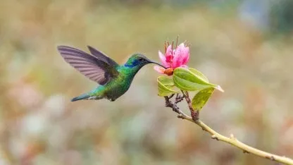
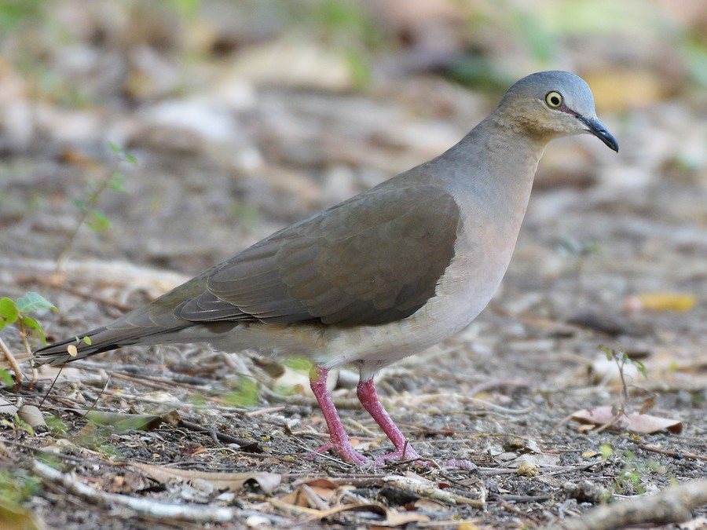

Búho
Los búhos son aves nocturnas presentes en varias regiones del estado.

Colibrí
El colibrí destaca por sus colores brillantes y su rápido vuelo.

Paloma Gris
Son conocidas por su plumaje gris y su gran capacidad de adaptación.